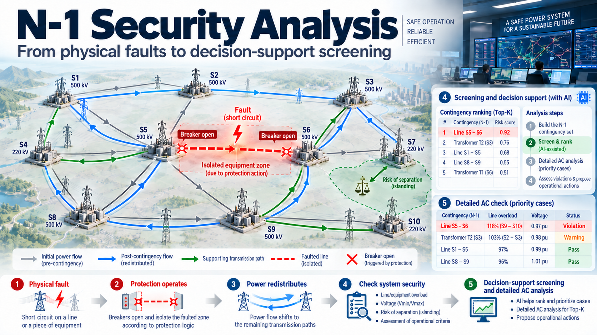

Protection zones, post-contingency power flows and the role of AI in security screening
N-1 security analysis evaluates network operation after the individual contingencies in a defined list. The result depends first on how each contingency is modelled: a fault on one element can cause protection to disconnect several devices. This article examines the relationship between the disconnection scope, network topology and sensitivity factors, then considers how AI can rank contingencies for AC verification.
In this illustrative computation-budget example, the AI model performs a ranking function that acts as a screening funnel. With a budget of 500 detailed AC calculations, every contingency in the official list remains within the governed scope; the model only determines which cases receive priority for verification inside the computation window. A violation outside the top 500 counts as a miss when screening quality is evaluated, not as a contingency removed from the list.
Van Tuan DangSeptember 28, 2026Power-system security · AI decision support

Conceptual overview. The figure places the physical event sequence alongside the analytical workflow. In operation, N-1 screening and ranking are performed on hypothetical contingencies before a real event occurs; AC calculations confirm the prioritised cases.Part I · From the event to the post-contingency state
1. The N-1 criterion in transmission operation
Lines, transformers and switching equipment can fail during operation. When an element leaves service, the remaining system must accommodate the resulting changes in power flows and voltage. Network design, operating reserves and remedial actions must work together to limit supply interruptions and prevent further outages.
Under the N-1 criterion, the system must meet the specified security limits following a single contingency from the assessed list, taking permitted remedial actions into account. The assessment therefore depends on the operating state, contingency scope and time available for corrective action. An acceptable base case alone does not establish that the system can withstand the next outage.
Protection timing and operator response
Electrical transients and protection actions can develop faster than an operator can assess and respond to them. The time available to relieve an overload depends on the equipment, loading level and protection settings. Pre-contingency analysis helps establish actions that can be completed within that time.
Response times. The figure illustrates the difference between electrical processes, protection actions and operator response. The times shown are illustrative; an operational study must use the relevant equipment data and protection settings.
Pre-contingency analysis must track the current network state and contingency list. Results need to arrive early enough for operators to prepare corrective actions.
N-1 analysis starts from a reference network state, applies each contingency, computes the resulting state and checks the limits. For the illustrative scale of 7,000 buses and 10,000 branches used here, the list can contain thousands of cases. Both the list and the results must be updated as topology and operating conditions change.
The physical event must be defined before a solver is selected. Assessing whether the system can withstand a contingency first requires identification of the equipment that protection will remove from service.
Part I · From the event to the post-contingency state
2. Network topology and protection scope
Contingency resilience depends on both transmission topology and the way protection isolates the faulted equipment.
Redundancy through meshed topology
In a meshed network, disconnecting a line redistributes power through the remaining paths according to network impedances. Continued operation depends on the capacity and limits of those paths. Radial branches have fewer alternative supply paths and require separate treatment in the contingency assessment.
Meshed and radial connections. In this example, the main network has alternative transmission paths, while the peripheral feeder has one connection. Removing it separates the downstream network.
Protection and fault isolation
Relays use measurements and protection logic to detect faults and command the relevant circuit breakers. In the model considered here, real circuit breakers can interrupt fault current; disconnectors and busbar connections do not perform that function.
The computational object used here is more precisely called the protection-induced outage set: the equipment removed from service when boundary breakers open to isolate a fault. It is derived from node-breaker connectivity and the clearing logic in section 8. It is not identical to a relay protection zone defined by settings, CT/VT placement or differential protection; operational use requires checking primary and backup protection schemes and the actual device states.
Disconnection scope in the example. With no breaker at the tap, the line and busbar lie within the region isolated by A, B, C and D. A breaker at the tap can change that scope, depending on the protection configuration.
Where dedicated breakers isolate an element, the disconnection scope can coincide with that element. A single-element outage model is appropriate in that case. Shared-breaker and tapped configurations require explicit identification of the equipment actually disconnected.
Configurations with multiple-element disconnection
A line tap (tee-off, or piquage) connects a substation without a full set of breakers at the tapping point. This reduces equipment and construction costs but can enlarge the disconnection scope. In the three-branch example without breakers at the tap, the remote-end breakers open to isolate the region.
Effect of breakers at the tap. The left configuration separates the branches with breakers. The right configuration relies on remote-end breakers, so a fault within the region disconnects all three branches under the example’s protection assumptions.
Three-winding transformer arrangements and bays linked through disconnectors also require node-breaker analysis. Zone count and size depend on substation design and switch states. They cannot be inferred from line or bus counts alone.
Once the disconnection scope is defined at equipment level, the problem moves into the electrical domain. Where will the power that previously used the removed equipment redistribute, and which limits on the surviving network may be violated?
Part I · From the event to the post-contingency state
3. Post-contingency power flows
Following a line outage, flows on the remaining branches change according to topology, impedances and generation–load conditions. Security analysis calculates this state in advance to identify violations and remedial needs.
The following three cases illustrate the distinctions used in this article.
Three cases on the same network. The fault location and disconnection scope determine the remaining connectivity. Post-contingency loading and violations still require calculation.
Case 1 · LODF
One element removed, network remains connected
When the network remains connected, flows redistribute and may overload surviving branches. LODF estimates active-power flow changes under the DC approximation, provided the outage does not split the network and the bus-injection assumptions remain appropriate.
Case 2 · GLODF
One fault disconnects multiple elements
If several elements are disconnected while the network remains connected, their combined effect must be calculated simultaneously. Summing individual LODFs on the original network does not capture the interactions among the removed elements. GLODF handles this case within the same linear approximation.
Case 3 · Islanding
Islanding
Removing a bridge or a cut set can separate the network into components. Each component requires a generation, load and balance assessment. In the retained network model, the change in exchange with the separated component must be compensated under an explicit balancing assumption. The usual LODF formula does not apply directly to islanding.
Structural classification considers the disconnected set, connected components and injections in each component. Power flows and operating limits are checked in the subsequent calculation.
On a small network, these three mechanisms can be identified directly. In operational systems, the same classification and calculation must be repeated for thousands of contingencies as topology changes and processing time remains limited.
Part II · The scale problem
4. Computational scale and contingency screening
The cost of detailed AC assessment across the full contingency list depends on network size, case count, convergence and computing resources. The official contingency list remains the scope governed by the operational process; screening neither redefines nor removes cases from that list. Under a processing deadline, screening only reduces or prioritises the detailed AC calculations to be completed within the decision window, under an approved safety policy. The quality of that prioritisation must be assessed through detection performance and the severity of missed cases.
Machine learning can use simulation results to rank contingencies on new operating states. Relevant measures include the share of violating cases retained in the top-K, processing time and the severity of missed cases.
Selecting contingency–element relationships
With 10,000 contingencies and 10,000 monitored elements, full connectivity produces 100 million pairs. Sensitivity factors identify pairs with significant electrical interaction in the linear model. The retained count depends on topology and the selection threshold, which must be validated against ranking performance.
Sensitivity-based pair selection. Retained relationships form a sparse model input, reducing processing compared with a fully connected representation.
In this architecture, sensitivity factors define input relationships for the ranker. They also provide linear estimates of flow changes, but do not replace AC results. A learned model may capture information omitted by the DC approximation; that capability must be demonstrated on test data.
Aligning contingency scope between inputs and labels
If labels come from simulations that remove a whole protection zone while the sensitivity map assumes one element, inputs and labels describe different outages. The disconnected set must be aligned before training and evaluation.
Mismatch in modelling scope. Single-element sensitivities and zone-outage results are directly comparable only when they describe the same disconnected set.
A multi-element zone can produce several records for one event, each with a different sensitivity map. These duplicates affect training and occupy multiple top-K positions. Grouping by disconnection scope addresses both issues.
Reducing computation is valuable only when the physical question remains unchanged. Building sparse inputs without conflating different event types requires a precise understanding of what each sensitivity factor represents and when it ceases to apply.
Part III · Selecting the right physical model
5. GLODF and ISDF in a unified sensitivity framework
PTDF describes the linear response to changes in bus injections. LODF and GLODF use that relationship for single- and multiple-branch outages. Islanding requires separate treatment of lost power exchange and balancing; this article uses the article-specific symbol ISDF (Islanding Sensitivity Distribution Factor) for that response. It does not mean the Injection Shift Distribution Factor found elsewhere in power-system literature.
The factor must be selected from the actual disconnection set and the post-contingency topology. The number of elements in the zone is not sufficient to determine the formula.
Methodological contribution of this article
The article places GLODF and ISDF within one selection logic driven by the protection-defined disconnection scope. When a group of elements is removed and the retained network remains connected, GLODF represents the simultaneous group effect and the interactions among the removed elements. When that scope separates a component carrying power exchange, ISDF represents the response of the retained network under an explicit balancing policy. They are two branches of the same structural classification, not interchangeable formulas.
5.1 PTDF: sensitivity to a power transfer
Consider a 1 MW increase at bus i and a 1 MW decrease at bus j. A branch PTDF is the ratio of its flow change to the transfer, for the linear model and topology under consideration.
PTDF for transfer i → j. Values indicate the share of the transfer carried by each branch in the example.
ΔFl = PTDFl,(i→j) · ΔP
Meaning: in the linear DC model, the change in flow on branch l equals its PTDF for transfer i → j multiplied by the transfer change. The factor depends on network topology and branch parameters. Because the transaction is balanced (+ΔP at i, −ΔP at j), this PTDF is independent of the reference-bus choice; a slack policy is needed for an unbalanced single-bus injection change.
5.2 LODF: sensitivity to a single-branch outage
LODF relates the flow change on a surviving branch to the pre-outage flow Fk on the removed branch. It uses PTDFs on the original network and the correction 1 − PTDFk,k to account for removal of branch k.
LODF applicability. For a bridge, PTDFk,k equals 1 in the ideal DC model and the denominator is zero. This case requires islanding treatment.
LODFl,k = PTDFl,k ⁄ (1 − PTDFk,k) ΔFl = LODFl,k · FkMeaning: PTDFl,k is the sensitivity of branch l to a transfer between the two terminals of k. If k is a bridge in the ideal DC model, the denominator is zero and the case must be handled as an islanding problem.
5.3 GLODF: simultaneous multiple-branch outages
GLODF answers the following question: when the complete branch set G associated with a protection zone is removed, how much does the flow on each surviving branch change? Branches in G no longer exist to carry one another’s redistributed power, so their effects must be solved simultaneously through an interaction matrix. Summing individual LODFs calculated on the original network is therefore not equivalent to removing the group. In the framework developed here, G comes from the physical event created by protection rather than from an arbitrary collection of independent elements.
Interaction matrix M. For one branch, M = 1 − Ξkk and the expression reduces to LODF. When the removed set disconnects the network, M is singular and the islanding structure must be addressed.
Worked example: two elements k₁, k₂ trip together, branch l is monitored
Self-sensitivity
Ξ₁₁ = 0.30
Ξ₂₂ = 0.25
Share of the transfer through itself
Mutual sensitivity
Ξ₁₂ = 0.20
Ξ₂₁ = 0.20
Interaction between k₁ and k₂
Sensitivity of l
Ξl1 = 0.40
Ξl2 = 0.10
Pre-contingency flows F₁ = 100 MW, F₂ = 80 MW
Two LODFs, summed
0.571 × 100
+ 0.133 × 80
= 67.8 MW
GLODF, simultaneous
0.660 × 100
+ 0.309 × 80
= 90.7 MW
In the example, summing individual effects gives a result 23 MW below the simultaneous calculation. This difference can change whether a pair is retained in the sensitivity map.
M = I − ΞGG GLODFl,G = Ξl,G · M−1 ΔFl = GLODFl,G · FGMeaning: ΞGG is the k×k interaction matrix; Ξl,G is the sensitivity row for monitored branch l; and FG is the vector of pre-contingency flows. If M is singular or ill-conditioned, connectivity and balancing assumptions must be checked before selecting an appropriate solution method.
5.4 ISDF in this article: response of the retained network after islanding
ISDF as defined in this article addresses a different question: when a bridge or cut set causes islanding, how does the retained network respond to the power exchange that has just disappeared across the boundary? The change is represented at the boundary bus and compensated by participating generators with weights α. The factor maps that net disturbance to flow changes on the surviving branches using the pre-contingency exchange and the selected balancing policy. Because α is an operational choice rather than a fixed network property, flow direction and balancing assumptions must be recorded explicitly when calculating and verifying the factor.
Two response components. Each balanced transaction from boundary bus bk to a participating bus g is mapped to branch-flow changes through PTDF; the α weights combine those transactions into the selected balancing policy. Operation of the separated island requires its own assessment.
ISDFl,k(α) = Σg αg · PTDFl,(bk→g) ΔFl = ISDFl,k(α) · FkMeaning: PTDFl,(bk→g) represents the flow change on branch l caused by a balanced transaction that injects at boundary bus bk and withdraws at participating bus g. The α-weighted sum, with Σαg = 1, represents the selected balancing policy. This transaction-based form is consistent with the PTDF definition in Section 5.1; α is an operating assumption, not a fixed network parameter, and must be consistent between the screening model and the solver used for comparison.
Applicability of the factors
Factor
Quantity represented
Applicability
Additional assumption
PTDF
Branch-flow change caused by a transfer
Reference topology and balanced transaction are defined
Source–sink pair; a balanced transfer is slack-independent
LODF
Flow redistribution after one branch outage
The outage does not split the network
Pre-contingency state
GLODF
Flow redistribution after a group outage
The group outage does not split the network
Interaction matrix; k = 1 reduces to LODF
ISDF(α)
Response of the retained network after islanding
Connected components and power imbalance are known
Balancing policy α
The factors share a linear foundation but have different applicability conditions. A zero denominator or singular matrix requires structural analysis before a connected-network expression can be used.
Formula selection must follow the post-contingency structural classification. Each calculation requires the removed equipment set, the surviving connected components and the assumption used to resolve any power imbalance.
Part III · Selecting the right physical model
6. Selecting the model from post-contingency topology
After identifying the disconnected equipment, the first question is whether the topology remains connected or separates into multiple components. Losing generation or load is not the same as islanding: an outage set can remove an injection while the remaining transmission backbone stays connected. Connectivity must therefore be classified first, followed by the balancing requirement within each component.
Check connectivity first, then determine the balancing requirement. A lost injection on a still-connected network is combined with LODF/GLODF; island-specific treatment begins only when the topology separates into multiple components.
In the DC model, loss of connectivity makes the interaction matrix singular. Isolating an empty connection node must be distinguished from separating a component with injections. The tolerance for zero injection and the balancing convention must be explicit and consistent between sensitivities and the label-generating solver.
The frequency of each case depends on substation topology, radial branches and switch states. Network-specific statistics are needed to organise the calculation.
The small network below illustrates the model-selection rule directly. It separates the effects of connectivity, injections and disconnection scope before the method is extended to a larger system.
Part III · Selecting the right physical model
7. Contingency classification on a small network
Select an element to inspect the disconnected zone, separated component and corresponding calculation method. This interactive illustration uses the topology and injection assumptions of the example network.
Mechanism
—
Structural checks
Pick any element. Elements in the same protection zone light up together:
that is what actually leaves service.
ElementZone removedPart split off● node · ◎ node with load · ○ T: tap point, no breaker
L8 and L9 are both dead-end branches whose removal isolates a node. The node behind L8 has load; the node behind L9 has no injection. The connectivity change is similar, but the balancing treatment differs.
This example assumes that the disconnected zone is already known. In an operational model, that information should not be inferred from the bus-branch diagram; it must be traced through node-breaker connectivity and the actual states of switching devices.
Part III · Selecting the right physical model
8. Contingency propagation and the final outage set in a node-breaker model
The node-breaker model represents circuit breakers, disconnectors and busbar sections explicitly. The interactive illustration below does more than determine disconnection scope: it describes contingency propagation at the topology and protection layer. Starting from the faulted element, the traversal passes through devices that cannot isolate the fault, stops at boundary breakers and carries out elements inside the same protection zone. The result is the final outage set, which need not contain only the initiating element.
Processing chain: Initial contingency → Topology and protection propagation → Final outage set → Connectivity classification → LODF / GLODF / islanding → AC load-flow verification.
Three layers must remain distinct. Contingency propagation determines which elements actually leave service. LODF, GLODF or the islanding model provides a rapid assessment of the electrical consequences of that set. AC load flow confirms the final steady state under the adopted network model and operating limits. The illustration can be stepped through or played automatically; its DC calculation uses Sbase = 100 MVA to expose the mechanism.
BreakerFictitious breakerDisconnectorBoundary breaker: opensPassed throughNode visitedOut of serviceIslanded partGeneratorLoad
Traversal rules by equipment type
Meets
State
Decision
Consequence
Why (physics)
Busbar / internal connection
Always connected
PASS
Keep exploring everything attached
A busbar is one electrical node; it cannot interrupt anything
Disconnector
Closed
PASS
Spread to the other side
In this model, it is not treated as a fault-interrupting boundary
Fictitious breaker
Closed
PASS
Treated as a disconnector
An artefact of model conversion, not a device that can open
Real breaker
Closed
STOP · OPEN
Becomes a zone boundary and opens to clear the fault
It can interrupt fault current
Any switch
Already open
STOP
Nothing more to open
That path is already broken
End of another line or transformer
Attached without a breaker
DRAGGED OUTCONTINUE
That element leaves service; explore on from its far end
It sits inside the zone with no breaker in between
Generator / load
Attached to the zone
DRAGGED OUT
Its power is lost and must be compensated
It loses voltage with the zone
In the illustrative model, nodes connected by closed switches are merged into buses. Components disconnected from the slack are excluded from the DC calculation, so their violations and ability to operate independently are not assessed. The imbalance is allocated to the remaining generators in proportion to maximum output. These are assumptions of the calculation.
Load flow does not describe contingency propagation; it solves the steady state only after the final outage set has been determined.
Scope of the illustration. Propagation here is based on the node-breaker model and electrical isolation logic. In operation, an outage may propagate through functional dependencies that cannot be inferred from electrical topology alone, including auxiliary supply, cooling, control power, automation and interlocking. These relationships require a separate dependency-model layer.
Once the disconnection scope is traceable and used consistently in simulation, inputs and labels describe the same event. The question then changes from whether the sensitivity map runs to how well it screens, and which risks it can miss.
Part IV · Verification and transferability
9. Designing and evaluating the sensitivity map
The sensitivity map should be evaluated through screening performance and processing cost. Key choices include pair thresholds, electrical relationships, contingency features and the ranking unit.
Sparsity
Pair thresholds and missed-contingency risk
Pair thresholds reduce processing but may discard useful information. Measure their effect on recall and missed-case severity alongside memory use and processing time.
Physics vs topology
Electrical coupling and graph distance
Graph distance does not fully describe electrical interaction. Distant elements may share a transmission corridor, while nearby branches may have low mutual sensitivity. Pair selection should account for impedances and transmission paths.
Coverage
Evaluating a wider map
Adding structural neighbours increases pair count and memory use. Since the model also uses contingency features such as loading and margins, the benefit of additional pairs must be measured on the same evaluation data.
The unit
Ranking physical events
A three-element zone can occupy three top-K positions if its elements are ranked separately. Grouping by zone avoids duplicates and aligns the sensitivity map, labels and simulation cases.
Distance and sensitivity. On the left, parallel transmission paths create significant interaction. On the right, separate feeders have low interaction under the example’s balancing assumptions.
Limits of the linear approximation
Three factors require attention when using sensitivities for screening:
DC approximation. The model does not fully represent losses, reactive power or voltage magnitudes. Compare it with AC results; learned correction is useful only to the extent demonstrated by data and evaluation.
Topology changes. Maintenance outages can reduce alternative paths and change sensitivities. Update or revalidate the map when operating topology changes significantly.
Voltage and current limits. Active-power sensitivities cover only part of the assessment. Where voltage or reactive power is a major constraint, additional models and indicators are needed.
Events requiring separate modelling
The traversal rules do not cover every protection mechanism. Busbar faults, breaker failure and common-mode events require their own initiating conditions and rules. A breaker failure can require wider backup isolation, while two circuits on one tower can fail together.
Extending the contingency list requires corresponding protection rules, disconnection scopes and balancing assumptions for each event type.
A threshold calibrated on one topology does not automatically transfer to another. Mesh density, breaker arrangements and the share of radial branches change both the mix of contingency mechanisms and the acceptable sparsity of the map.
Part IV · Verification and transferability
10. Application across transmission networks
The classification procedure can be applied to different networks when connectivity, switch types and states, and generation–load data are available. Islanding must be checked even when pre-contingency exchange is zero.
Contingency categories by network structure. The bars are illustrative. Application requires statistics from the topology and switch states of the network being assessed.
A bus-branch model supports sensitivity calculation but usually lacks the detail needed to derive protection scope. When exchanging this representation, include zone mappings or contingency lists derived from the node-breaker model. Bus injections and balancing assumptions must also be consistent.
Differences between networks do not change the requirement for internal consistency. The event, model and verification method must represent the same physical state. When AI is introduced, computational speed cannot substitute for evidence of reliability.
Part V · AI in the operational workflow
11. AI for contingency ranking and screening
AI can rank contingencies to prioritise AC calculations within the available time. The ranking feeds verification; it is not a security conclusion. The workflow must specify how uncomputed cases are handled and when full assessment is required.
Combining physics and learned rankings. Cases from both lists are merged, deduplicated and prioritised for AC verification. Top-K is a calculation order, not an automatic boundary for discarding every remaining contingency.
In TSO deployment, screening requires an approved safety policy: a validated screening criterion, monitoring for topology and data drift, a fallback to a full sweep or equivalent assessment, and an explicit treatment of every case not yet evaluated by AC within the current decision window. “Outside top-K” must never be interpreted as “secure”.
Combining with a physics-based method
A learned ranker can lose accuracy on topologies or operating states outside its training data. Sensitivities recomputed on the current topology provide an independent basis, but remain limited by linear assumptions and data quality. Part of the AC budget can be reserved for highly ranked physics-based cases, with the remainder selected by the learned model. Evaluate the combination through recall, missed-case severity and total processing time.
Screening evaluation criteria
Recall at fixed K. Measure the share of AC-violating contingencies retained in the selected top-K. Track false positives as well, since they consume calculation time that could be allocated to other cases.
Evaluation by snapshot. Report performance for individual operating states, including the worst cases. Average performance alone does not characterise operational risk.
Severity. Distinguish violation levels, such as 101% and 140% loading. Report severe missed contingencies separately.
Matched comparison. Compare learned, physics-based and combined methods on the same data and simulation budget. Select thresholds on validation data before test evaluation.
AI supports verification priorities. Security conclusions depend on appropriate calculations, operating limits and the scope of assessed contingencies. Operators retain decision authority.
In this workflow, AI allocates verification priority and does not produce the security conclusion. Saved computation can then be used to assess additional forecast states, outage plans and remedial actions.
Part V · AI in the operational workflow
12. From broad N-1 screening to detailed studies
N-1 is the baseline security criterion, not the limit of the analytical scope. Its value lies in systematic coverage across many operating states, followed by a focused allocation of resources to physically credible multiple contingencies and cases requiring more detailed models.
Reducing the cost of each assessment allows more forecast states, outage plans and remedial actions to be examined. N-1 results expose margins, overload risk, critical contingencies and candidate remedial actions. Combined with contingency-propagation logic, they can also identify outage sets linked by topology, protection or functional dependency, instead of blindly enumerating every N-2 or N-3 combination.
Level 1 · Breadth
N-1 assessment across operating states
Run frequently across many grid states and contingencies to monitor margins, overload risk, critical events and remedial actions that may be available.
Level 2 · Selective escalation
Physically credible N-k events
Prioritise dependent outages, common-mode events, breaker failure, islanding and outage sets produced by propagation rather than enumerating every combination indiscriminately.
Level 3 · Depth
Verification and detailed studies
Use AC calculations to confirm the steady state of prioritised cases; send high-severity, low-margin or dynamically sensitive cases to RMS and EMT studies under separate selection criteria.
Assessing more operating states. Screening supports a broader set of steady-state scenarios and selection of cases for more detailed study. Dynamic analysis needs additional selection criteria.
Assessing forecast scenarios
Wind and solar output, demand and exchanges create a range of possible operating states. N-1 analysis across scenarios identifies conditions that lead to overloads and actions that reduce the risk. Operators can prepare topology changes, redispatch or phase-shifter settings before those actions are needed.
Coordination between operators
In a combined regional model, element and contingency counts grow while processing deadlines remain constrained. Screening can support day-ahead and intraday updates. Operators need consistent contingency lists, limits, protection models and balancing assumptions to use the results jointly.
Selecting cases for RMS and EMT studies
Steady-state analysis checks the post-contingency operating point under specified assumptions. It does not establish stability during the transition to that point. RMS and EMT studies require generator, load, controller and protection dynamics. Steady-state results can inform case selection, but dynamic instability can occur without steady-state overloads. Steady-state N-1 screening should therefore not be the sole criterion for excluding dynamic-study cases.
Extending the assessment scope
Dependent and multiple contingencies. N-2, N-3, breaker failure, islanding and common-mode events increase the case count rapidly. Priority should be given to credible, physically connected events; screening performance must be evaluated separately for each event class.
Planning and outage schedules. Assessing maintenance plans across generation–load states helps identify higher-risk periods.
Explaining results. Rankings should identify at-risk elements, estimated effects and calculation assumptions so operators can review them.
Validation scope and current limitations
Four levels of evidence should be kept distinct. PTDF, LODF, GLODF and component-wise power balancing are established theory. The article’s contribution is to organise GLODF and its article-defined ISDF within one selection logic driven by the protection-induced outage set, then use that structure to build a sparse interaction space for screening. The figures and numerical examples check the internal consistency of the reasoning on illustrative networks; they do not establish performance on a real TSO grid. Operational use requires validation across real snapshots and topologies, threshold calibration, error measurement against AC results, out-of-distribution testing, and a safety case with a defined fallback.
Conclusion
The credibility of N-1 security analysis depends first on how the network event is represented, rather than on the solver or AI model alone. An equipment fault becomes a meaningful computational case only when the protection response, disconnected equipment set and resulting network structure are represented consistently. On that basis, LODF treats the loss of one branch while the network remains connected; GLODF extends the calculation to a group of simultaneously disconnected elements; and ISDF describes the response of the retained network when the event removes a boundary power exchange and requires an explicit balancing policy.
The framework is not intended to replace AC simulation with a linear formula. Its purpose is to include the physical structure of the event in screening, reduce the computational space and preserve traceability of retained relationships, applied factors and governing assumptions. A learned model may use that information to rank contingencies; its output has operational value only after verification on the current topology, assessment of missed-case risk and placement under operator authority.
In the proposed analysis architecture, the physical model defines the event and interaction space; AI performs the prioritisation task within that space. This separation of functions allows the learned model to be evaluated independently and integrated as an auditable component of the security-analysis process.
N-1 is therefore the baseline layer that provides breadth, not the final limit of the analysis. Its screening results support anticipation across more operating states, selection of physically credible multiple contingencies, and allocation of AC, RMS or EMT studies to the cases that require the corresponding depth of verification.
To move this approach from a research model into an operational and auditable workflow, five principles must remain consistent throughout:
Define the disconnection scope. Contingency lists, sensitivities and simulation labels must use the same set of removed equipment.
Check topology before selecting the formula. Use LODF/GLODF within their applicability conditions; for islanding, identify components and balancing assumptions before calculating the response.
Retain node-breaker information. When exporting a bus-branch model, preserve zone mappings and contingency lists so disconnection scopes remain traceable.
Verify the value of AI. Measure recall, missed-case severity and processing time by snapshot against a physics-based method under matched conditions.
Extend assessment with appropriate checks. Use saved computation for additional scenarios and remedial actions, and select dynamic-study cases using suitable criteria.